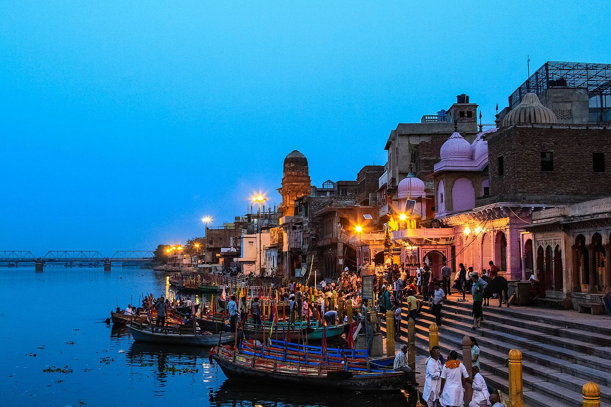
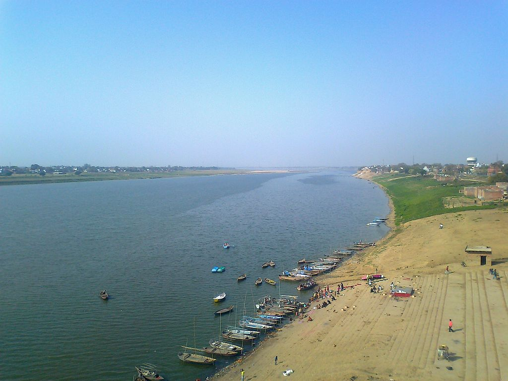

2.Yamuna River
The Yamuna (Hindustani: pronounced [jəmunaː]), also spelt Jumna, is the second-largest tributary river of the Ganges by discharge and the longest tributary in India. Originating from the Yamunotri Glacier at a height of about 4,500 m (14,800 ft)[1] on the southwestern slopes of Bandarpunch peaks of the Lower Himalaya in Uttarakhand, it travels a total length of 1,376 kilometres (855 mi) and has a drainage system of 366,223 square kilometres (141,399 sq mi), 40.2% of the entire Ganges Basin. It merges with the Ganges at Triveni Sangam, Allahabad, which is a site of the Kumbh Mela, a Hindu festival held every 12 years.
Like the Ganges, the Yamuna is highly venerated in Hinduism and worshipped as the goddess Yamuna. In Hinduism she is the daughter of the sun god, Surya, and the sister of Yama, the god of death, and so is also known as Yami. According to popular legends, bathing in its sacred waters frees one from the torments of death. It crosses several states: Haryana and Uttar Pradesh, passing by Uttarakhand and later Delhi, and meeting its tributaries on the way, including Tons, Chambal, its longest tributary which has its own large basin, followed by Sindh, the Betwa, and Ken. From Uttarakhand, the river flows into the state of Himachal Pradesh. After passing Paonta Sahib, Yamuna flows along the boundary of Haryana and Uttar Pradesh and after exiting Haryana it continues to flow till it merges with the river Ganges at Sangam or Prayag in Allahbad (Uttar Pradesh). It helps create the highly fertile alluvial Ganges-Yamuna Doab region between itself and the Ganges in the Indo-Gangetic plain.

Nearly 57 million people depend on the Yamuna's waters, and the river accounts for more than 70 percent of Delhi's water supply. It has an annual flow of 97 billion cubic metres, and nearly 4 billion cubic metres are consumed every year (of which irrigation constitutes 96%). At the Hathni Kund Barrage, its waters are diverted into two large canals: the Western Yamuna Canal flowing towards Haryana and the Eastern Yamuna Canal towards Uttar Pradesh. Beyond that point the Yamuna is joined by the Somb, a seasonal rivulet from Haryana, and by the highly polluted Hindon River near Noida, by Najafgarh drain near Wazirabad and by various other drains, so that it continues only as a trickling sewage-bearing drain before joining the Chambal at Pachnada in the Etawah District of Uttar Pradesh.

The water quality in "Upper Yamuna", as 375 kilometres (233 mi) long stretch of Yamuna is called
from its origin at Yamunotri to Okhla barrage,
is of "reasonably good quality" till Wazirabad barrage in Delhi. Below this, the discharge of
wastewater in Delhi through 15 drains between Wazirabad barrage and Okhla barrage renders the river
severely polluted.
Wazirabad barrage to Okhla Barrage, 22 km stretch of Yamuna in Delhi, is less than 2% of Yamuna's
total length but accounts for nearly 80% of the total pollution in the river, 22 out of 35 sewage
treatment plants in Delhi do not meet the wastewater standards prescribed by the Delhi Pollution
Control Committee (DPCC).
There are four main causes of Yamuna's pollution in Delhi: poor quality of water released by the
effluent treatment plants, household and municipal disposal sites, soil erosion resulting from
deforestation occurring to make way for agriculture, and resulting chemical wash-off from
fertilizers,
herbicides, pesticides and run-off from commercial activity and industrial sites.One official
described the river as a "sewage drain" with biochemical oxygen demand (BOD) values ranging from 14
to 28 mg/L and high coliform content.